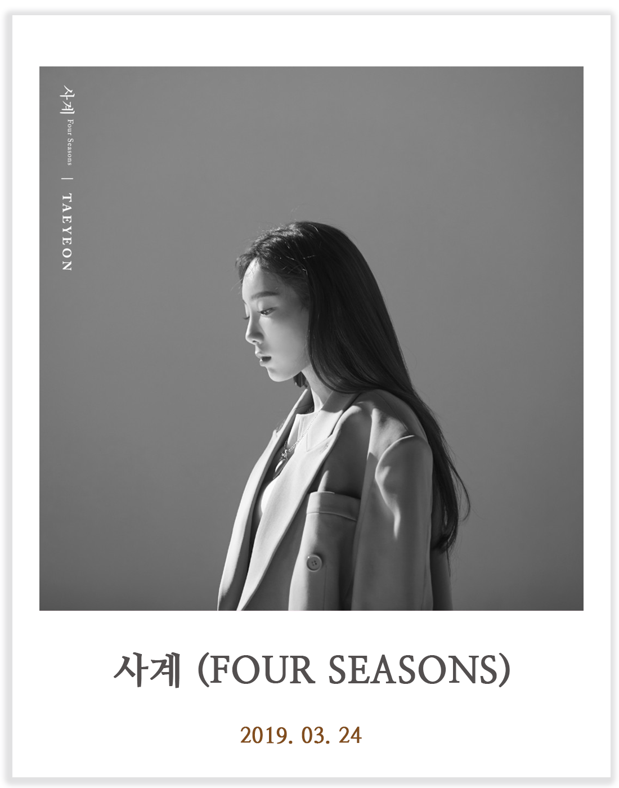

LIVE
/

/
'믿듣탱' 태연, 2년 6개월 만에 정규앨범 컴백

'태연이 강렬한 매력의 신곡 ‘불티 (Spark)’로 올가을 감성 스파크를 일으킨다.
- Everybody loves the things you do -
/
TAEYEON ALBUM
/
TAEYEON 'Purpose' Highlight Clip #1 Gravity
'믿듣탱' 태연, 2년 6개월 만에 정규앨범 컴백
소속사 SM엔터테인먼트는 태연이 오는 22일 정규 2집 '퍼포즈'(Purpose)로 컴백한다고 10일 밝혔다.
'퍼포즈'는 태연에게는 음악이 가장 중요한 삶의 방향성이자 목표 중 하나라는 의미로 붙은 제목이다.
지난 3월 발표한 싱글 '사계'(Four Seasons), '블루'(Blue)와 신곡 10곡까지 총 12곡으로 구성됐다.
https://www.nocutnews.co.kr/news/5225487
'태연이 강렬한 매력의 신곡 ‘불티 (Spark)’로 올가을 감성 스파크를 일으킨다.
이번 타이틀 곡 ‘불티 (Spark)’는 얼터너티브 소울 팝 장르의 곡으로,
감정을 휩쓰는 강렬한 멜로디와 태연의 압도적인 보컬이 어우러져 있으며,
가사에는 태연의 아이덴티티를 표현하는 다양한 메타포들을 담아 곡의 매력을 배가시킨다.